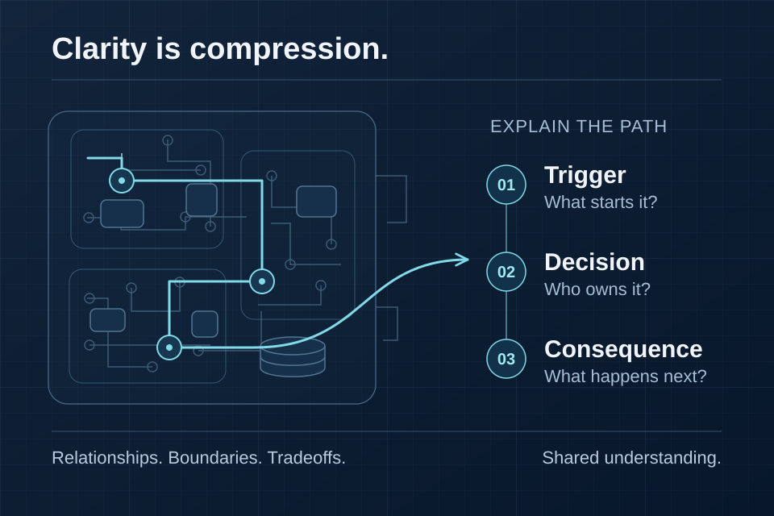

Engineering & clarity
Why Technical Storytelling Matters for Engineers
Diagrams, documentation, and demos help people share a mental model. Making systems understandable is part of building them.

In this article · 13 sections
Engineers spend a lot of time learning how to build systems.
We learn languages, frameworks, protocols, databases, cloud infrastructure, APIs, testing, architecture, deployment.
Then at some point the job changes.
You're still expected to build.
But now you're also expected to explain.
Explain the architecture to another engineer.
Explain the tradeoff to a product manager.
Explain the integration to a customer.
Explain the failure to leadership.
Explain the security boundary to a reviewer.
Explain why a seemingly simple request is actually difficult.
Explain why a complicated system is actually solving a simple problem.
That's technical storytelling.
And I think it's an engineering skill.
Storytelling isn't decoration
The word “storytelling” can make engineers suspicious.
It sounds like marketing.
I'm not talking about adding drama to technical work.
I'm talking about structuring information so another person can understand:
What problem exists?
Why does it matter?
How does the system work?
What decisions did we make?
What tradeoffs did we accept?
What happens next?
That's storytelling.
And most good technical documentation already does some version of it.
Architecture diagrams are stories
Take an architecture diagram.
A bad one can contain every component and still explain nothing.
Imagine thirty boxes:
API Gateway
Auth Service
User Service
Redis
Kafka
Postgres
Worker
Notification Service
Search Service
Model Gateway
Vector Store
...
All technically accurate.
But what am I supposed to understand?
A useful architecture diagram gives me a path.
User
↓
Application
↓
API
↓
Core Services
├── Database
├── External Integration
└── AI Service
↓
Model
Now I can ask meaningful questions.
Where does authentication happen?
Where does state live?
Which calls leave our boundary?
What happens synchronously?
What happens asynchronously?
Which component owns the action?
The diagram isn't merely inventory.
It's explaining the system.
Sequence matters
Technical explanations often fail because they start at the wrong level.
Suppose I ask:
“How does your integration work?”
And the answer begins:
“We're using Node.js with an event-driven architecture and PostgreSQL…”
That doesn't answer the question yet.
I'd rather start with:
“When a customer completes a purchase, our backend receives the confirmed purchase event. We validate that the event is eligible, create a mint request, and then submit the corresponding transaction to the smart contract.”
Now I have a mental model.
Then we can discuss Node, contracts, storage, queues, retries, or whatever implementation details matter.
The technical details become easier to understand because they attach to a sequence.
Club Swan is a good example
The interesting technical story behind Club Swan wasn't simply:
“We used blockchain.”
The more useful explanation is the relationship between the physical and digital systems.
A prepaid card is purchased.
That real-world commercial event needs to become a controlled digital mint event.
The system has to establish eligibility.
It has to authorize the mint.
It has to prevent accidental duplicate creation.
It has to create the ERC-721 token.
It has to associate metadata.
It has to support the wallet/digital experience.
So the architecture story becomes:
Card Purchase
↓
Application / Backend
↓
Mint Authorization
↓
ERC-721 Contract
↓
Blockchain
↓
Metadata / IPFS
↓
Wallet / Digital Experience
Now concepts like idempotency, correlation IDs, mint permissions, metadata portability, and contract behavior make sense.
They are solutions to problems in the story.
That's what technical storytelling does.
It gives technical decisions context.
Different audiences need different stories
One architecture can have multiple valid explanations.
To a smart-contract engineer, I might focus on:
contract behavior, mint authorization, token ownership, transaction state, failure handling.
To a backend engineer:
purchase events, idempotency, correlation IDs, API boundaries, storage.
To a product person:
what causes the NFT to exist, what the customer experiences, what happens when something fails.
To leadership:
why the architecture exists, what risk it introduces, what it enables, what future capabilities it creates.
None of those explanations is inherently dishonest or “dumbed down.”
They operate at different levels of abstraction.
Being able to choose the correct level is part of technical communication.
Clarity can expose weak thinking
One reason explaining systems is valuable is that it reveals where our understanding is incomplete.
It's easy to say:
“The agent handles it.”
What does that mean?
What inputs does the agent receive?
What tools can it call?
Who authorizes those tools?
Where is application state stored?
What happens if the model returns invalid output?
What happens if the tool fails?
Can the model retry?
What gets logged?
Suddenly “the agent handles it” isn't enough.
Trying to explain the system forces architectural questions.
That's why writing can be an engineering tool.
If I can't clearly explain which component owns a decision, maybe the architecture doesn't clearly own it either.
Good names are part of the story
This extends all the way down to code.
Consider:
processData();
versus:
validateMintEligibility();
authorizeMintRequest();
publishTokenMetadata();
The second version communicates the domain.
Naming creates a narrative inside the system.
The same applies to APIs.
The same applies to event names.
The same applies to database models.
The same applies to dashboards.
A well-designed system tells you something about what it does through its structure.
Explain tradeoffs, not just decisions
A weak architecture explanation says:
“We chose technology X.”
A stronger one says:
“We chose X because we needed A and B, and we were willing to accept C.”
That's much more useful.
Every meaningful technical decision has constraints.
SQL versus NoSQL.
Synchronous versus asynchronous.
Build versus buy.
Monolith versus services.
Managed model API versus self-hosting.
Vector retrieval versus structured search.
Webhooks versus polling.
You don't demonstrate technical maturity by pretending your choice had no downside.
You demonstrate it by understanding why the downside was acceptable.
AI systems make this even more important
AI products create a communication problem because the model itself can feel magical.
A user asks a question.
An answer appears.
The architecture between those two events can disappear.
But that's where many of the important product decisions live.
For example:
User question
↓
Intent detection
↓
Permission-aware context
↓
Retrieval
↓
Model
↓
Structured output
↓
Validation
↓
Permitted action
That story immediately creates better questions.
What gets retrieved?
Where do permissions apply?
Can the model act directly?
What validates its output?
What happens when retrieval fails?
Without the story, everything becomes:
AI did it.
That's not an architecture.
Technical storytelling improves cross-functional work
Software rarely exists entirely inside engineering.
Product needs to understand constraints.
Sales needs to understand capabilities.
Security needs to understand boundaries.
Support needs to understand failure modes.
Customers need to understand integrations.
Leadership needs to understand risk and investment.
If the only people capable of understanding the system are the people who wrote it, the organization has a problem.
Senior technical work often involves creating shared understanding across those boundaries.
That doesn't mean every engineer needs to become a conference speaker.
It means communication becomes part of system delivery.
Documentation is part of the product
This becomes especially obvious with APIs.
An API can be technically excellent and still miserable to use.
If developers cannot understand:
how to authenticate, how requests work, what errors mean, how retries work, what rate limits exist, what webhooks look like,
then the integration experience is poor.
The code works.
The product doesn't.
Documentation, examples, diagrams, error messages, and demos are all interfaces between the technical system and the people trying to use it.
Complexity isn't the same as sophistication
Sometimes the strongest technical explanation is surprisingly simple.
Not because the system is simple.
Because the person explaining it has figured out what matters.
That's difficult.
Anyone can put forty services on a diagram.
It's harder to show the seven components someone needs in order to understand the architecture.
Anyone can explain every implementation detail.
It's harder to choose the five details that explain the engineering decision.
Clarity is compression.
You understand the system well enough to preserve the important information while removing the noise.
Building is only part of engineering
The ability to build complex systems matters.
But software engineering doesn't end when the code compiles.
Someone has to understand the system.
Someone has to maintain it.
Someone has to approve it.
Someone has to integrate with it.
Someone has to operate it.
Someone has to decide whether to invest further in it.
Technical storytelling helps all of those people build the same mental model.
That's why I don't see communication as something separate from engineering.
At a certain level, making complex systems understandable is part of building them.
Written by Lew Akil — engineer, product builder, and technical storyteller.